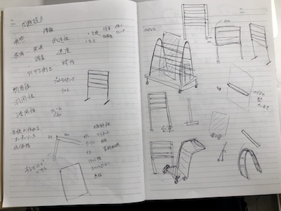

Fusionを使おう！
Fusionを使って学校に設置するものを作ってみようという課題。
漠然と作っていくのは大変なので自分で調査し設定を立てた。
作る目的
・グループごとの会議をより活発にするもの
→アイデアを沢山出せる
→すぐ情報を共有できる
作るにあたっての条件
・ ホームルーム予算が少ない
→安い金額で作れる
→自由度が高い
・生徒が作れる
→材料がホームセンターなどで買える
→学校にある機材で出来る
→設計図はオープンソース
以上のことを考えた上で自分が作りたいものに言葉をつけるなら、
未完成の完成というものでしょう。
これはグラフィックデザイナーの原研哉さんが作り出す平面的余裕だったり、
建築家のアレハンドロ・アラヴェナのキンタ・モンロイの集合住宅だったりと
製作物に対しての余裕のようなものがユーザーに対して
完成への広範囲な道筋を提供しているように思える。
そのような作品を作りたいと思った。
以上のことからアイデア出しをしていった。

そこから使い慣れているcinema4dで形を作ってみた。
この形に納得ができずFusionで新たに作成。
作ってみたは良いものの1回目に作ったものよりユーザーへの余裕がないものに
なってしまった。